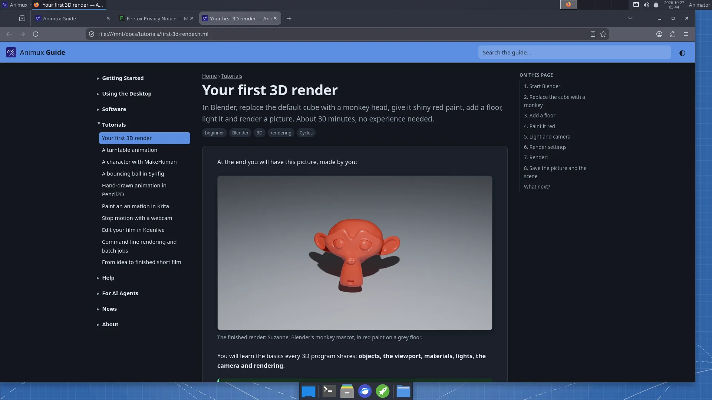

Animux now comes with its own documentation: the Animux Guide, the site you are reading.
- For people new to Linux: from downloading the ISO and trying it in VirtualBox, to installing, the desktop, and every program, with screenshots taken on Animux itself.
- Tutorials that build on each other: a first render, a turntable animation, a MakeHuman character, a Synfig bouncing ball, hand-drawn animation in Pencil2D, a Krita loop, stop motion, editing in Kdenlive, command-line rendering, and a plan for a first short film.


- Offline: on Animux it is under Animux Tools → Animux Guide and at
http://127.0.0.1:8765/. - For AI agents: every page also exists as Markdown, with
llms.txt, JSON indexes of the pages and of all software (with headless commands), a command-line tool and an MCP server. See For AI agents.
The guide is published under CC BY-SA 4.0. Corrections and translations are welcome.